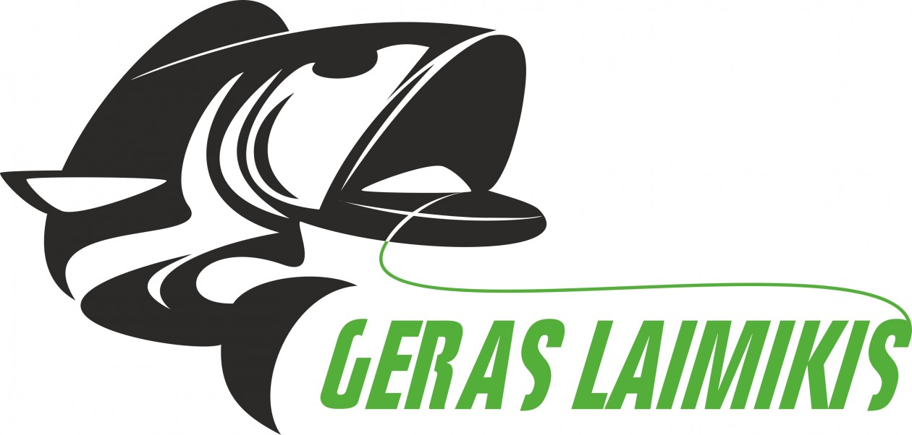

Meškerės, spiningai | ZVEJYS.LT®
 English Lietuvių Dovanų Kuponai Apie Mus Mano krepšelis 0 vnt. - € 0.00Krepšelis tuščias
Rodyti Krepšelį Apmokėti Prekių grupės MEŠKERĖS MEŠKERĖSEŽERAMS, UPĖMS
Spiningavimui Plūdinės Dugninės meškerės Karpinės meškerės Žieminės meškerėsJŪRINĖS MEŠKERĖS
Žvejybai iš laivo Jūriniai spiningai Surf meškerėsVELKIAVIMUI
Spiningai velkiavimuiMuselinės
RITĖS RITĖSSpiningavimui
Karpinės / Dugninės
Jūrinės ritės
Muselinei
Baitcast ritės - žemo profilio
Baitcast ritės - bačkutės
Žieminės ritės
KIETI MASALAI KIETI MASALAIVOBLERIAI
SAVAGE GEAR RAPALA STORM SALMO Pontoon21 MEGABASS JAXON DAIWA LUCKY JOHN RAPTURE detaliauMETALINIAI MASALAI
Sukriukės Blizgės PilkeriaiPOLEDINEI ŽŪKLEI
Avižėlės Žieminės blizgutės Švytuoklės balansyrai Aksesuarai MINKŠTI MASALAI MINKŠTI MASALAIGuminukai
Valgomi guminukai
Jūriniai masalai
Poroloniniai masalai
JAUKAI, MASALAI JAUKAI, MASALAIJaukai
Boiliai
Natūralūs priedai
Peletės, Granulės
Skysčiai
Aksesuarai
Priedai jaukams
APRANGA APRANGAKostiumai
Termo apatiniai
Bridkelnės
Bliuzonai, džemperiai
Batai
Kepurės, kaukės
Marškiniai
Gelbėjimosi liemenės
Akiniai
Striukės
Kelnės
Liemenės
VALAI, PAVADĖLIAI VALAI, PAVADĖLIAIPintas valas
Paprasti valai
Fluorokarbono valas
Karpiniai valai, pavadėliai
Muselinis valas
Jūrinis valas
Pavadėliai plėšrūnėms
ĮRANKIAI IR AKSESUARAI ĮRANKIAI IR AKSESUARAIĮRANKIAI
Graibštai Svarstyklės Sieteliai, tinkleliai Meškerių laikikliai Replės, Žirklės ĮvairūsKREPŠIAI, DĖKLAI
Dėžės Dėklai meškerėms Dėžutės Krepšiai Žieminės dėžės, dėklaiKIBIMO INDIKATORIAI
Svingai, BeždžionėlėsREIKMENYS ŽŪKLEI
Kabliukai Galvakabliai Plūdės Jūrinės sistemėlės Svareliai, Šėryklos, Sistemėlės Palaidynių priedai Segtukai, Suktukai Įvairūs ŽiedeliaiKarpinei žūklei
Cheminės medžiagos
Feeder žūklei
Atramos, laikikliai Talpos, įrankiai jaukams ELEKTRONIKA ELEKTRONIKAECHOLOTAI, priedai
Echolotai Aksesuarai SonaraiSignalizatoriai
Žibintai
VALTYS, TURIZMO REIKMENYS VALTYS, TURIZMO REIKMENYSVALTYS
Valtys Valčių priedai Pompos valtimsVARIKLIAI VALTIMS
Elektriniai Varikliai Benzininiai Varikliai Akumuliatoriai, KrovikliaiVelkiavimo įranga
Kėdės, Gultai
Palapinės
Miegmaišiai
Virtuvės reikmenys
Peiliai
Poledinei žūklei Poledinei žūkleiPoledinei žūklei
Akcijos Naujos Prekės Perkamiausi Pirkti pagal Gamintoją Dovanų Kuponai Kontaktai Mano paskyra Užsakymai Palyginimo sąrašo peržiūra Prisijungti ARBA Registruotis Pradinis MEŠKERĖSPasirinkite Prekių Grupę
MEŠKERĖS EŽERAMS, UPĖMS JŪRINĖS MEŠKERĖS VELKIAVIMUI Muselinės RITĖS KIETI MASALAI MINKŠTI MASALAI JAUKAI, MASALAI APRANGA VALAI, PAVADĖLIAI ĮRANKIAI IR AKSESUARAI ELEKTRONIKA VALTYS, TURIZMO REIKMENYS Poledinei žūkleiPatikslinkite paiešką
Prekinis ženklas − + Feeder Concept Aisė Daiwa DAM Favorite Fenwick FL Hokkaido Ice Force Iron Wolf Lucky John Maximus Owner Rapala Rumpol Runos Salmo Savage Gear Sensas Shimano Siweida Tenryu Volzhanka Prologic Okuma Ron Thompson ScierraNieko nerasta pagal pateiktus kriterijus
Ilgis − + 160-185cm 186-200cm 201-220cm 221-240cm 241-270cm 270-300cm 301-330cm 331-360cm 361-390cm 360cm 391-420 421-450cm 451-550cm 550cmNieko nerasta pagal pateiktus kriterijus
Užmetimo svoris − + 0-7g 3-14g 7-21g 10-30g 14-40g 20-50g 50-100g 100-250g 2.75lbs 5.5lbs 20-30lbs 30-50lbsNieko nerasta pagal pateiktus kriterijus
Kaina − + €0 €369 – € Akcija − + Ypač greita Greita Vidutiniškai greita Vidutinė LėtaNieko nerasta pagal pateiktus kriterijus
Dalių skaičius − + 1 dalies 2 dalių 3 dalių 4 dalių 4 daliųNieko nerasta pagal pateiktus kriterijus
Spiningo tipas − + tradicinis su trigeriuNieko nerasta pagal pateiktus kriterijus
IšvalytiMEŠKERĖS
EŽERAMS, UPĖMS JŪRINĖS MEŠKERĖS VELKIAVIMUI Muselinės Lygiuoti pagal Kainą: min - max Lygiuoti pagal Abėcėlę: A - Z Lygiuoti pagal Abėcėlę: Z - A Lygiuoti pagal Kainą: max - min Lygiuoti pagal Populiarumą 24 / puslapį 16 / puslapį 32 / puslapį 64 / puslapį 128 / puslapį 1 2 3 4 5 6 7 8 2 - 15ŽVEJYBOS REIKMENYS INTERNETU
Savage Gear vobleriai
Shimano spiningai
Shimano ritės
Rapala vobleriai
Salmo vobleriai
Echolotai
Valtys
Termo rūbai
Mano Paskyra
Prisijungti Sukurti paskyrą Norų sąrašas Palyginimų sąrašasKITA
Apie Mus Kontaktai Dovanų Kuponai Prekiniai ženklai Turinys ForumasInformacija Klientams
Pirkimo - Pardavimo taisyklės Pristatymas Grąžinimai Privatumo Politika Slapukų naudojimo politika DUKKONTAKTAI
Savanorių pr.196, Kaunas
LT-50186, Lietuva
Tel. +370 698 48338,+370 671 81553
zvejysirko@gmail.com